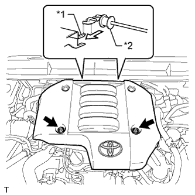

КОРПУС ДРОССЕЛЬНОЙ ЗАСЛОНКИ ДИЗЕЛЬНОГО ДВИГАТЕЛЯ (для моделей с DPF) > СНЯТИЕ |
| 1. СНИМИТЕ КРЫШКУ ДВИГАТЕЛЯ № 1 В СБОРЕ |
|  |
Отверните 2 гайки.
| *1 | Крепление крышки двигателя № 1 |
| *2 | Кронштейн крышки двигателя № 3 |
Отсоедините 2 крепления крышки двигателя № 1 от кронштейна крышки двигателя № 3 и снимите крышку двигателя № 1.
| 2. ОТСОЕДИНИТЕ ВАКУУМНУЮ ТРУБКУ № 4 В СБОРЕ |
 |
Выверните болт и отсоедините вакуумную трубку № 4.
| 3. ОТСОЕДИНИТЕ ВОЗДУШНЫЙ ШЛАНГ ПРОМЕЖУТОЧНОГО ОХЛАДИТЕЛЯ |
 |
Ослабьте хомут шланга и отсоедините воздушный шланг промежуточного охладителя.
| 4. СНИМИТЕ ВПУСКНОЙ ПАТРУБОК № 1 |
 |
Отсоедините 2 разъема от датчика температуры воздуха на впуске и датчика положения дроссельной заслонки.
Освободите 2 зажима жгута проводов.
 |
Ослабьте 2 зажима шланга и снимите воздушный шланг № 1.
Выверните 2 болта и снимите впускной патрубок № 1.
| 5. СНИМИТЕ КОРПУС ДРОССЕЛЬНОЙ ЗАСЛОНКИ ДИЗЕЛЬНОГО ДВИГАТЕЛЯ В СБОРЕ |
 |
Отсоедините разъем двигателя дроссельной заслонки.
Выверните 2 болта, отверните 2 гайки и снимите корпус дроссельной заслонки дизельного двигателя с прокладкой.